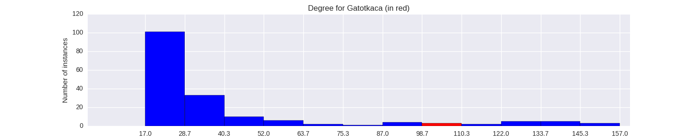

Quantiative Wayang Dictionary
Gatotkaca

Terms of address: Raden
Type: Human
Origin: India
Notes on the Sanskrit version: Gatotkacha is born to the ogress Hidimbi and prince Bhima. He is often depicted as a giant. He was raised by his mother and helped the Pandavas during the Mahabharata war. He was killed in the end. Even at the point of his death, he fell down in a way such that his body crushed the Kaurava soldiers, hence helping the Pandavas even when he was about to die.
Alternative names: Ranggana, Gurundaya, Tetuka, Gatutkaca, Kancanegara, Guritna, Purbaya, Bimasiwi, Rencongares, Krincingwesi, Arimbyatmaja
Description in the Javanese version: As a child he was asked to save the Gods form an attack on the heavens (see Gatotkaca_Lahir) by Kala Pracona. He was known as Tetuka as a baby and then received the name Gatotkaca. He eventually became the rule of Pringgandani, although [Brajadentha] and Brajamusthi opposed him (see /Brajadhenta_Mbalela_(Gatotkaca_Wisudha)/). They eventually entered his body as Ajis. Gatotkaca was killed in the Bartayuda war by Karna.
Found in the follwing lakon (stories):
- Wisanggeni_Lahir
- Semar_Boyong_(Wahyu_Katetreman)
- Wahyu_Topeng_Waja
- Semar_Mantu
- Wahyu_Makutharama
- Semar_mBangun_Kayangan
- Brajadhenta_Mbalela_(Gatotkaca_Wisudha)
- Prabu_Bimasakti
- Wahyu_Kaprawiran
- Semar_Mantu_Alternative_Version
- Bandung_Nagasewu
- Gatotkaca_Lahir
- Wahyu_Kembar
Family relationships
Mother: Arimbi
Father: Werkudara
Consorts: Pergiwa, Sumpani, Suryawati
Offspring: Sasikirana, Arya_Jayasumpena, Suryakaca
More information
Ruler of: Pringgandani
Killed by: Karna
Aji / Wahyu / Pusaka: Caping Basunanda, Kotang Antakusama, Aji Narantaka, Aji Brajamusti, Aji Brajadenta
Impersonated by: Brajadhenta, Bendana
Wanda: Gandrung, Gelap, Jaka, Guntur, Kilat, Smapluk, Pideksa, Thathit, Panglawung, Dukun
Sources: Ensiklopedi Wayang Purwa, pp. 217-222; Mengenal Gambar Tokoh Wayang Purwa, p. 104; Sejarah Wayang Purwa, pp. 183-185; Ensiklopedi Wayang Indonesia, pp. 69-81 (Vol. IV); Rupa dan Karakter Wayang Purwa, pp. 694-699
Network measurements for Gatotkaca
| Measurement | Value | |
|---|---|---|
| Degree | 105.0 |  |
| Weighted Degree | 553.0 |  |
| Betweeness Centrality | 225.541265273 |  |
| Eigenvector Centrality | 0.787825943207 |  |
{kind=link}
Characters in the same adegan as Gatotkaca
| Character | Link weight |
|---|---|
| Character | Link weight |